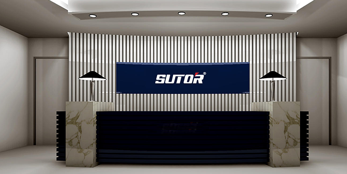

【独家】“豌豆公主”获 1000 万美金 A+ 轮融资，日本五大商社之一伊藤忠参投
来自新浪2016-04-12 12:45今日，专注日淘、走 B2B2C 模式的 “豌豆公主” 向 36 氪独家透露，已在近期获得了 1000 万美金的 A+ 轮融资，资方包括伊藤忠商社、真格基金、MTG 株式会社以及 Ventech Capital 。公司曾在 2月 中旬宣布过 Ventech Capital 领投的千万美金 A 轮融资。
在创始人翁永飆看来，既然是 B2B2C 模式，那 “豌豆公主” 和日本的 B 端绑定得越深、公司的竞争壁垒就越高。这也是在此轮融资中，引入贸易起家的日本五大商社之一伊藤忠，以及拥有 refa、style 等美容健康类仪器品牌的 MTG 株式会社的主要原因。
关注微信公众号外包购(外包go)，定时推送最新资讯。